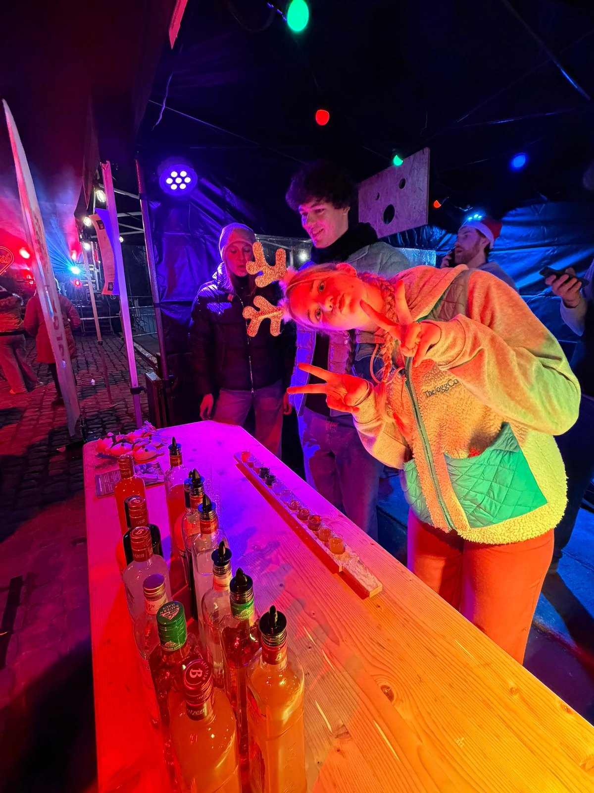

01
Ideeën verzamelen
Leden brengen noden, kansen en eventconcepten aan. De club kiest waar de meeste energie zit.

Over ons
Rotaract Club Gaasbeek Pajottenland VZW is de jonge serviceclub voor Gaasbeek en het Pajottenland. Elke derde vrijdag van de maand zitten we samen, en tussendoor organiseren we acties, events en teambuildings.
Missie
Rotaract is een internationaal netwerk van jonge mensen die via serviceprojecten en clubwerking bijdragen aan hun gemeenschap. Sinds onze oprichting in 2025 vertalen we dat in het Pajottenland naar lokale acties, sterke partnerschappen en een clubcultuur waar initiatief welkom is.
Onze vereniging is officieel geregistreerd als Rotaract Club Gaasbeek Pajottenland VZW met ondernemingsnummer BE1029.342.026.
Onze werking
Een clubjaar bestaat uit maandelijkse bijeenkomsten, projectteams, publieke acties, teambuildings en momenten met Rotary en andere Rotaract-clubs.
Leden brengen noden, kansen en eventconcepten aan. De club kiest waar de meeste energie zit.
Projectteams werken praktisch uit: planning, partners, communicatie en budget.
We zetten het project neer, evalueren eerlijk en maken tijd voor fellowship.


